Axilla · Chapter I
The Windstones of Zephras
September 28, 2026
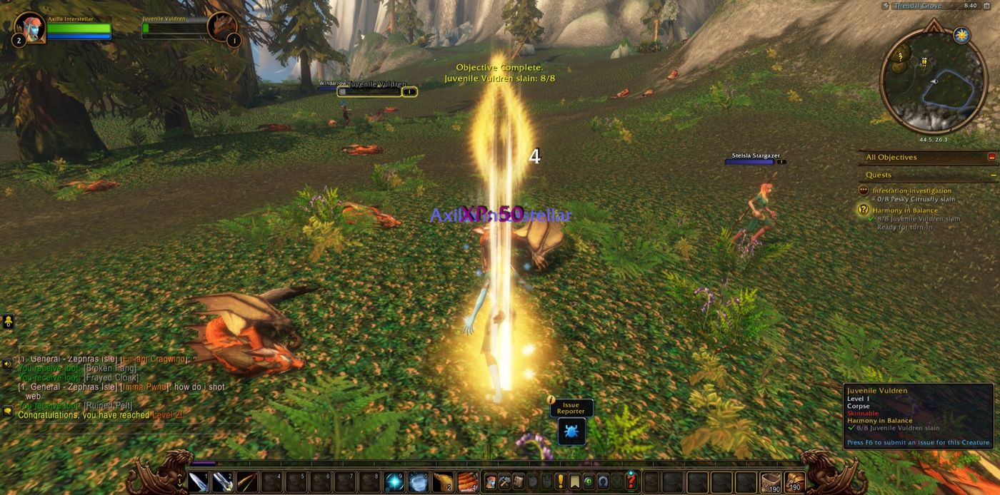
Axilla Interstellar began her road in Thendal Village upon Zephras Isle, and there she took up the errand called Coming of Age and saw it done before she had fairly set out. Then came Harmony in Balance, and the Juvenile Vuldren of Thendal Grove fell before her. Falling With Style bade her walk upon the air, and she did so. For The Anchors of Zephras she looked upon the Anchor Pylon. She read the Scribbled Note and sought out Tai'ree Farsight in the Grove, and so she entered upon The Way of the Hunter. It was a small beginning, as such things are, but it was hers.
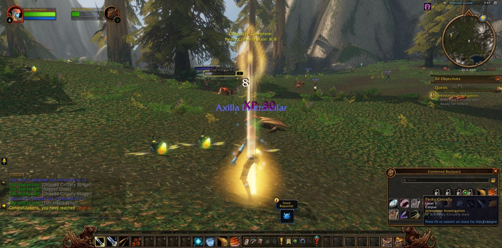
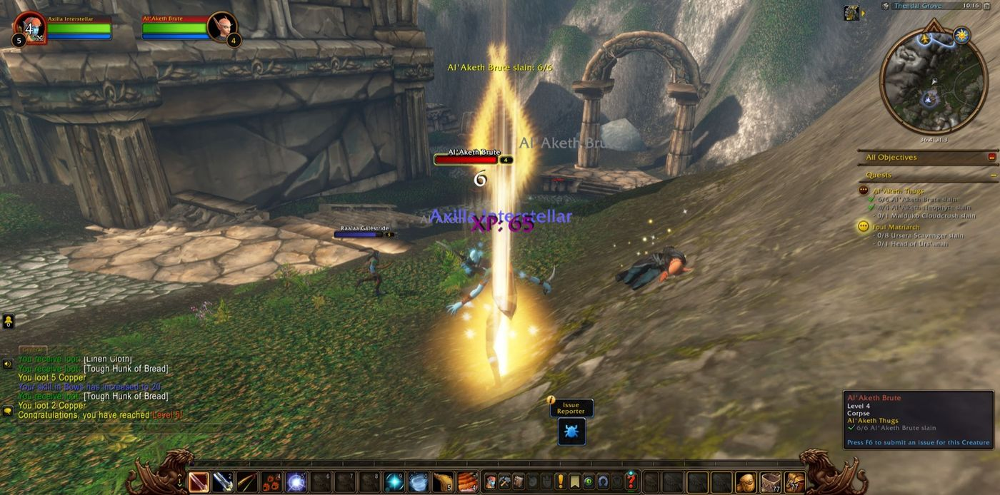
At Thendal Standing Stones she broke the Agitators, the Al'Aketh Converts and the Roiling Winds, and she used Skysight near the Elemental Convergence as The Gift of Skysight required. She made her Return to Rorian and gathered fifteen Windstone Clusters. In the Grove the Pesky Cirrusfly and then the Cirrusfly Queen herself were overcome, along with the Scrawny Ursera, the Al'Aketh Thugs, and Malduko Cloudcrush among them. Once in Thendal Grove she fell, and rose again, and went on. Last of all she went down into Thendal Cave. There she slew Urs'anah, the Foul Matriarch, and carried her head back to Thendal Village.
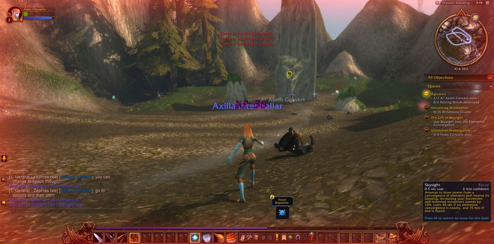
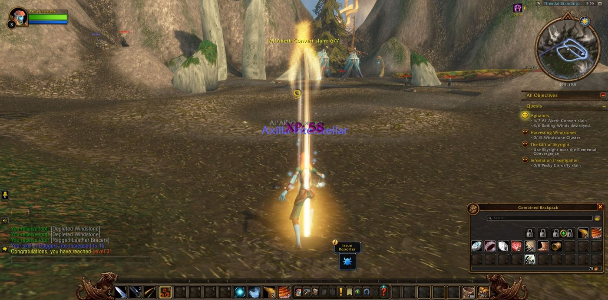
The Next Step and The Adventurer led her out to Shen'dar Highlands and on to Shen'dar Village. She sat by the campfire there as The Great Outdoors asked, and she listened to Illaya Amberwind speak of the Windshapers. From Zerril Softbreeze she learned the craft of cooking. Many errands were laid upon her in that village, and she carried them across Windsong Lake, the edges of Shadowgale Forest, and the long slopes below the West Pylon Watchtower. There she hunted Prideclaws for their pelts, Galestriders for meat, small eggs for the larders, and hippogryph down for A Little Beauty. Near the end of the Hippogryph Harrassment she was joined by Sky, a druid, and Ferroda, a hunter. They stood with her against the Hippogryph Matriarch and then went their ways. She took many pictures along that road.
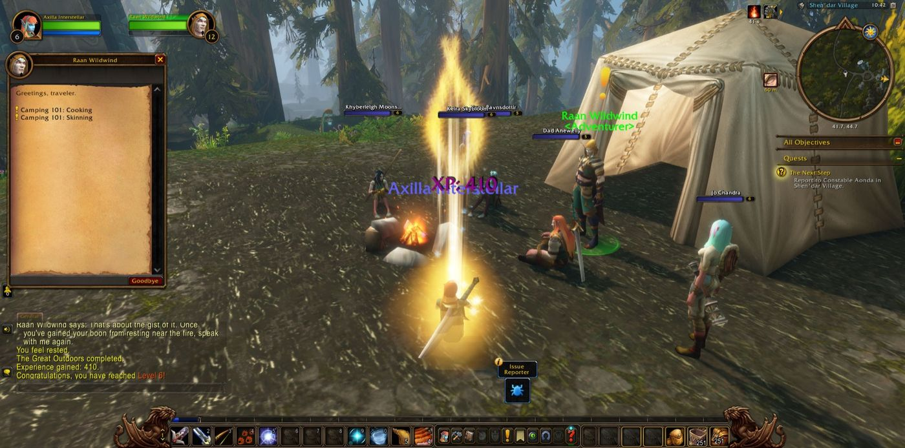
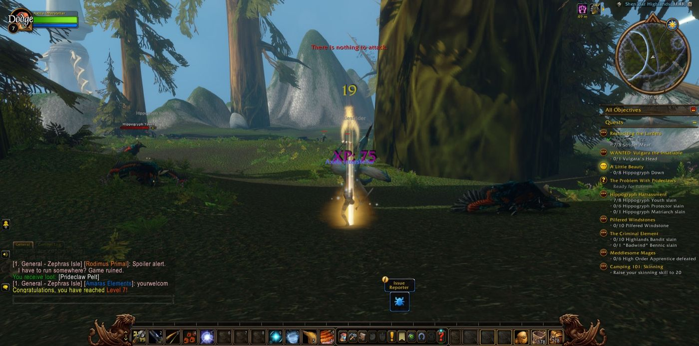
At Windsong Standing Stones Detlef the shaman came to her side, and he stayed with her longer than any other companion that day. Together they put down the Meddlesome Mages and the Highlands Bandits. Bluesham, another shaman, walked with them for a little while. At the Bandit Hideout the hunters Mewlin and Scabie and the druid Missy joined them, and "Badwind" Bennic fell there. Then that fellowship broke up as quickly as it had formed. In those fights she came into her strength, and she rose from her first level to her eighth. Back in Shen'dar Village she set her hand to Infiltrating the Cult. She went to Falaath Village and, going Among the Faithful, learned what the cultists had planned. Now Havoc in the Highlands, The Western Watch and Stolen Supplies were in her keeping, and Shen'dar Highlands still stretched out before her.
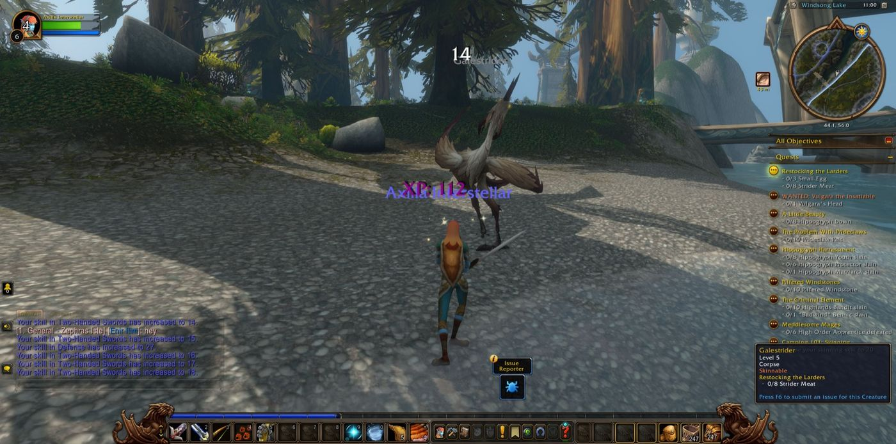
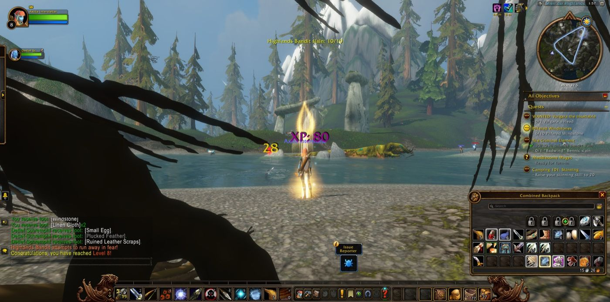
Also seen that night
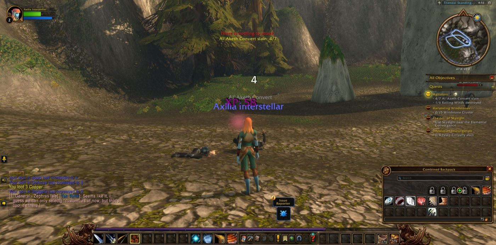
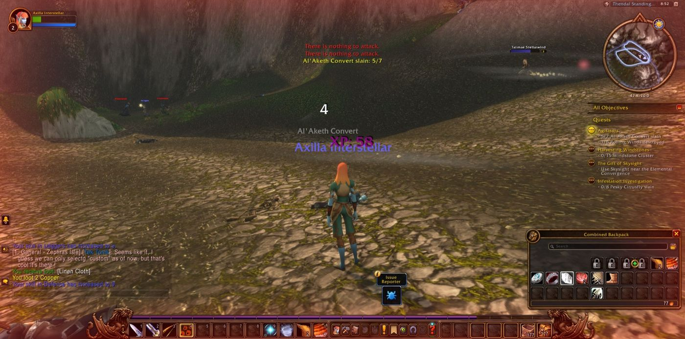
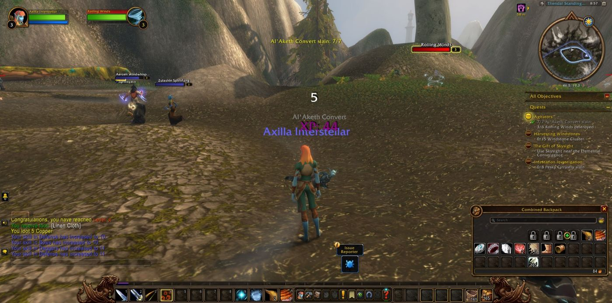
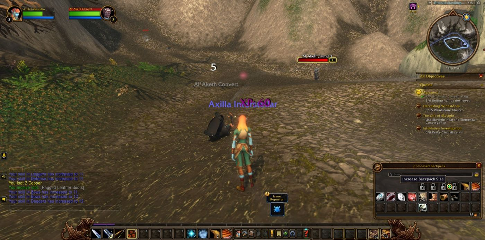